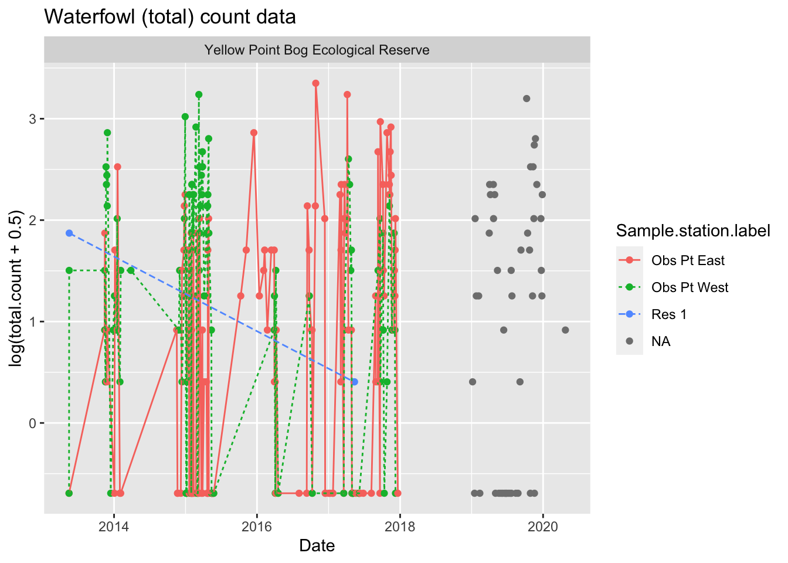
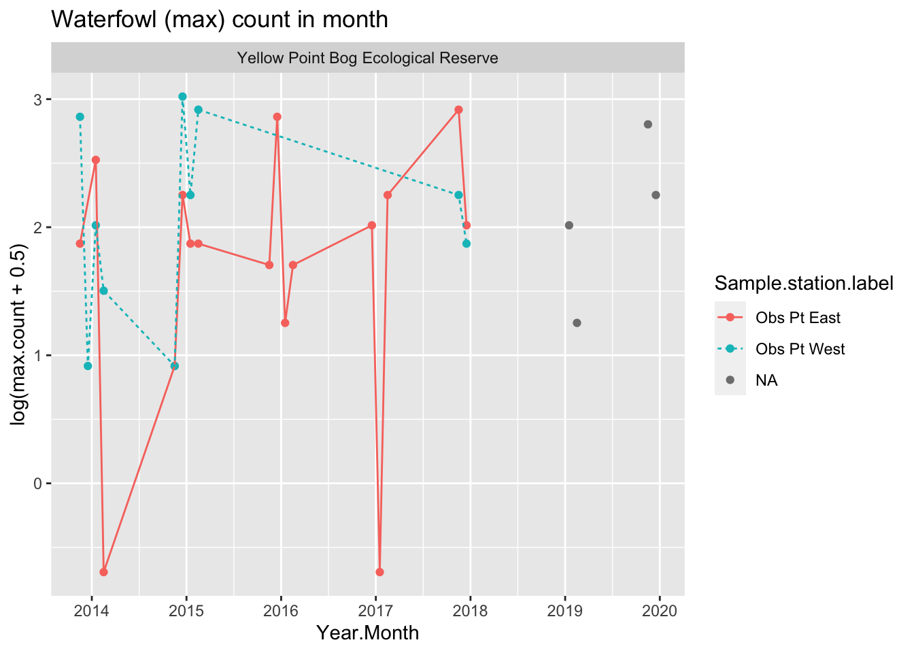
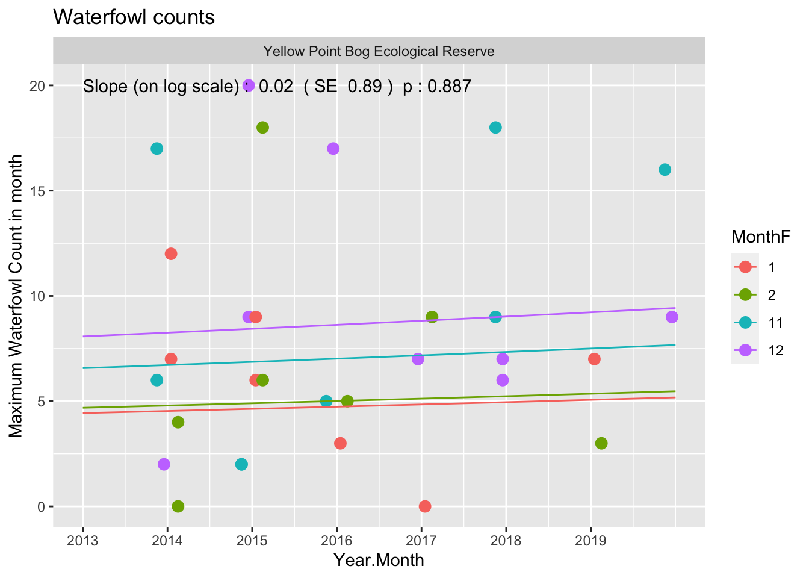
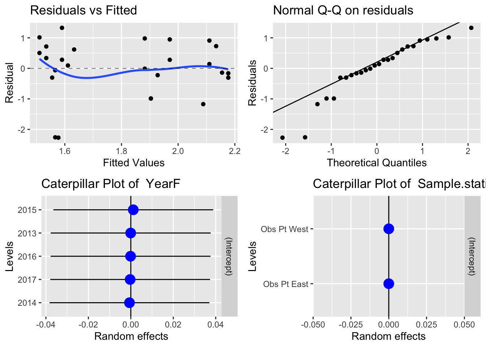

Waterfowl - LTEM - Yellow Point
1 Summary of Waterfowl LTEM protocol
1.1 Basic protocol
As taken from the protocol document:
“Establish observation points at enough sites to provide views of the entire survey area. …
Choose a date after which migrants are mostly gone. Count on 3 separate occasions during a 2-3 week period and keep > highest count.”
The data collected under this protocol at each survey consists of the following variables:
- Species. The species of waterfowl counted.
- Sex. The sex of the species.
- Count. The number of birds of this species and sex. Choose a date after which migrants are mostly gone
1.2 Cautions about the protocol.
1.2.1 Don’t use 0 to indicate a missing value.
If no species were seen during a visit, this is indicated by the species code being set to missing and the count field being set to 0. This needs to be done consistently over time.
If no visit was made to a station, then there are no records in the General Survey worksheet. One must infer that if there are no records for a station at a date, that it was not visited. The Sample Station Information worksheet only has information on the station label and not when they were visited. It is preferable to include in this sheet the visit dates of each station in that year explicitly rather than trying to infer this information from the General Survey worksheet.
1.2.2 Classifying by season
The protocol is silent about seasonal sampling, e.g., spring vs. fall. There is some issue on how to properly pool information that is close together but crosses year boundaries. For example, surveys may be done in late December of 2013 and early January of 2014. If the maximum counts over multiple visits in the winter are collected, visits on these two months need to be “combined” even though they are in different calendar years.
For this analysis we classified by month (November, December, January, February) to avoid this problem
1.3 Database structure
The database for this protocol is a series of Excel workbooks with multiple sheets in each workbook. The Sample Station Information sheet contains the information on the stations available for this year. If a station is not visited, this is indicated by a missing record in the General Survey worksheet. The General Survey sheet contains the information collected. There are multiple lines per visit. If a visit was done but no birds were seen, then the species code is set to missing with a count of 0.
The relevant fields on the General Survey worksheet are:
- Sample Location Label. **Appears to be changed to Transect Label starting in 2019.
- Date. The date the data was collected. The Year is extracted from this date.
- Species. What species were seen
- Count. Count of the number of birds of each species.
2 Reading and checking the data
**Extracting the following sheets General Survey
From wsi_5516_dct_2013YellowPointWaterbird.xlsm
From wsi_5516_dct_2014Yellowpoint.xls
From wsi_5516_dct_2015Yellowpoint.xls
From wsi_5516_dct_2016Yellowpoint.xls
From wsi_5516_dct_2017Yellowpoint.xls
From wsi_5516_dct_2019Yellowpoint.xlsm
From wsi_5516_dct_2020Yellowpoint.xlsm The database was read for all record pertaining to the Yellow Point. The following files were found for this site:
File names with the data [1] "wsi_5516_dct_2013YellowPointWaterbird.xlsm"
[2] "wsi_5516_dct_2014Yellowpoint.xls"
[3] "wsi_5516_dct_2015Yellowpoint.xls"
[4] "wsi_5516_dct_2016Yellowpoint.xls"
[5] "wsi_5516_dct_2017Yellowpoint.xls"
[6] "wsi_5516_dct_2019Yellowpoint.xlsm"
[7] "wsi_5516_dct_2020Yellowpoint.xlsm" Notice we needed to fix the Sample Station Label.
# Notice that Sample.station.label was changed to Transect.Label starting in 2018?
select <- is.na(waterfowl.df$"Sample Station Label")
waterfowl.df$"Sample Station Label"[select] <- waterfowl.df$"Transect Label"[select]The following data editing was performed
2.1 Variables names corrected for R
Variable names in R must start with a letter and contain letters or numbers or underscores. Blanks in variable names are not normally allowed, nor are special characters such as %. These are normally replaced by periods (“.”) in the variable name.
Original variable names in data frame [1] "Study area name"
[2] "Sample station label"
[3] "Date"
[4] "Time"
[5] "End time"
[6] "Surveyor"
[7] "Species"
[8] "Count"
[9] "Survey observation photos"
[10] "Animal id"
[11] "Utm zone"
[12] "Easting"
[13] "Northing"
[14] "Comments"
[15] "Inventory method"
[16] "Spatial accuracy (m)"
[17] "Detect type"
[18] "Detect direction (deg)"
[19] "Detect distance (m)"
[20] "Temporary animal id"
[21] "Life stage"
[22] "Sex"
[23] "Behaviour"
[24] "Feature type"
[25] "Feature label"
[26] "Feature count"
[27] "Sign type"
[28] "Sign or sample age"
[29] "Sign count"
[30] "Group label"
[31] "Adult males"
[32] "Adult females"
[33] "Adults - unclassified sex"
[34] "Juvenile males"
[35] "Juvenile females"
[36] "Juveniles - unclassified sex"
[37] "Males - unclassified life stage"
[38] "Females - unclassified life stage"
[39] "Unclassified life stage and sex"
[40] "Eggs"
[41] "Egg masses"
[42] "Larvae"
[43] "Pupae"
[44] "Hatchlings"
[45] "Fledglings"
[46] "Add your new field here"
[47] "Traps sprung"
[48] "No of visits or samples"
[49] "Nights trapped"
[50] "Distance covered (km)"
[51] "Design component visit comments"
[52] "Design component visit photos"
[53] "Design component visit photo comments"
[54] "Sampling condition type"
[55] "Sc datetime"
[56] "Air temp (c)"
[57] "Prec 48 hr air temp (c)"
[58] "Wind speed"
[59] "Wind direction"
[60] "Prec 48 hr wind speed"
[61] "Current precipitation"
[62] "Rainfall over 24 hours (mm)"
[63] "Rainfall over 48 hours (mm)"
[64] "Prec 48 hr precip"
[65] "Cloud type"
[66] "Cloud cover"
[67] "Cloud ceiling"
[68] "Prec 48 hr cloud cover"
[69] "Snow depth"
[70] "Snow cover"
[71] "Time since 5 cm snow"
[72] "Water temperature (c)"
[73] "Sea wind condition"
[74] "Sea surface temperature (c)"
[75] "Sea surface salinity (ppt)"
[76] "Swell height (m)"
[77] "Wavelet height (cm)"
[78] "Tide direction"
[79] "Ground temperature (c)"
[80] "Ground moisture"
[81] "Leaf moisture"
[82] "Official sunrise"
[83] "Lunar phase"
[84] "Turbidity (cm)"
[85] "Temperature variance"
[86] "Sampling condition comments"
[87] "workbook"
[88] "Reliable observer"
[89] "Quality observation"
[90] "Additional notes"
[91] "Transect label"
[92] "Additional predefined transect visit fields"
[93] "Predefined sampling condition fields"
[94] "Description precipitation"
Corrected variable names of data frame [1] "Study.area.name"
[2] "Sample.station.label"
[3] "Date"
[4] "Time"
[5] "End.time"
[6] "Surveyor"
[7] "Species"
[8] "Count"
[9] "Survey.observation.photos"
[10] "Animal.id"
[11] "Utm.zone"
[12] "Easting"
[13] "Northing"
[14] "Comments"
[15] "Inventory.method"
[16] "Spatial.accuracy..m."
[17] "Detect.type"
[18] "Detect.direction..deg."
[19] "Detect.distance..m."
[20] "Temporary.animal.id"
[21] "Life.stage"
[22] "Sex"
[23] "Behaviour"
[24] "Feature.type"
[25] "Feature.label"
[26] "Feature.count"
[27] "Sign.type"
[28] "Sign.or.sample.age"
[29] "Sign.count"
[30] "Group.label"
[31] "Adult.males"
[32] "Adult.females"
[33] "Adults...unclassified.sex"
[34] "Juvenile.males"
[35] "Juvenile.females"
[36] "Juveniles...unclassified.sex"
[37] "Males...unclassified.life.stage"
[38] "Females...unclassified.life.stage"
[39] "Unclassified.life.stage.and.sex"
[40] "Eggs"
[41] "Egg.masses"
[42] "Larvae"
[43] "Pupae"
[44] "Hatchlings"
[45] "Fledglings"
[46] "Add.your.new.field.here"
[47] "Traps.sprung"
[48] "No.of.visits.or.samples"
[49] "Nights.trapped"
[50] "Distance.covered..km."
[51] "Design.component.visit.comments"
[52] "Design.component.visit.photos"
[53] "Design.component.visit.photo.comments"
[54] "Sampling.condition.type"
[55] "Sc.datetime"
[56] "Air.temp..c."
[57] "Prec.48.hr.air.temp..c."
[58] "Wind.speed"
[59] "Wind.direction"
[60] "Prec.48.hr.wind.speed"
[61] "Current.precipitation"
[62] "Rainfall.over.24.hours..mm."
[63] "Rainfall.over.48.hours..mm."
[64] "Prec.48.hr.precip"
[65] "Cloud.type"
[66] "Cloud.cover"
[67] "Cloud.ceiling"
[68] "Prec.48.hr.cloud.cover"
[69] "Snow.depth"
[70] "Snow.cover"
[71] "Time.since.5.cm.snow"
[72] "Water.temperature..c."
[73] "Sea.wind.condition"
[74] "Sea.surface.temperature..c."
[75] "Sea.surface.salinity..ppt."
[76] "Swell.height..m."
[77] "Wavelet.height..cm."
[78] "Tide.direction"
[79] "Ground.temperature..c."
[80] "Ground.moisture"
[81] "Leaf.moisture"
[82] "Official.sunrise"
[83] "Lunar.phase"
[84] "Turbidity..cm."
[85] "Temperature.variance"
[86] "Sampling.condition.comments"
[87] "workbook"
[88] "Reliable.observer"
[89] "Quality.observation"
[90] "Additional.notes"
[91] "Transect.label"
[92] "Additional.predefined.transect.visit.fields"
[93] "Predefined.sampling.condition.fields"
[94] "Description.precipitation" 2.2 Dates converted to standardized form
The number of records by year are Year
Study.area.name 2013 2014 2015 2016 2017 2019 2020
Yellow Point Bog Ecological Reserve 27 44 153 55 127 93 22.3 Checking Study Area Name
The Study Area Name should be recorded consistently across years, otherwise it may indicate that different sites are being studies. The study area name is converted to Title Case.
The list of Study Area Names by year in the data is:
Year
Study.area.name 2013 2014 2015 2016 2017 2019 2020
Yellow Point Bog Ecological Reserve 27 44 153 55 127 93 22.4 Checking Station codes
While these are not used in the analysis, these labels should be consistent over time:
Sample.station.label
Study.area.name Obs Pt East Obs Pt West Res 1 <NA>
Yellow Point Bog Ecological Reserve 210 193 3 95 Year
Sample.station.label 2013 2014 2015 2016 2017 2019 2020
Obs Pt East 7 21 50 46 86 0 0
Obs Pt West 19 23 103 9 39 0 0
Res 1 1 0 0 0 2 0 0
<NA> 0 0 0 0 0 93 22.5 Checking species code
The species code should be the same across the file.
Year
Species 2013 2014 2015 2016 2017 2019 2020
ANATIDAE 3 1 0 0 0 3 0
ANSERIFORMES 0 0 2 4 5 0 0
B-BAGO 1 0 0 0 0 0 0
B-BEKI 0 0 1 0 0 0 0
B-BUFF 0 9 11 4 1 2 0
B-BWTE 0 0 0 0 2 0 0
B-CAGO 2 0 20 3 3 2 0
B-CITE 0 0 0 0 1 0 0
B-COME 0 3 6 1 1 2 0
B-EAGR 0 0 0 0 5 0 0
B-GBHE 0 2 2 1 0 0 0
B-GRSC 0 1 0 0 1 0 0
B-GWTE 0 0 0 1 2 0 0
B-HOME 12 14 30 17 24 17 0
B-LESC 2 0 14 0 12 0 0
B-MALL 4 3 16 4 18 10 1
B-NOPI 0 0 0 0 1 0 0
B-PBGR 0 0 0 0 9 2 0
B-RBME 0 0 0 0 0 1 0
B-RNDU 0 2 12 2 13 15 0
B-RNGR 0 0 0 7 0 0 0
B-TRUS 0 1 1 0 3 0 0
B-WODU 0 0 6 1 1 2 0
Bucephala 0 0 0 0 0 1 0
BUCEPHALA 0 1 0 0 0 0 0
NULL 3 7 32 10 25 35 1
PODICIPEDIDAE 0 0 0 0 0 1 03 Single Site Analysis
Date for the Yellow Point are available from 2013 to 2020.
This design has multiple stations that are repeatedly measured over time with multiple measurements at each station Please refer to the Fitting Trends with Complex Study Designs document in the CommonFile directory for information on fitting trends with complex study designs.
All analyses were done using the R (R Core Team, 2022) analysis system. All plots are also saved as separate *png files for inclusion into other reports.
3.1 Maximum counts
The data is first summarized to the date level by summing the count over multiple records (the different species) for each date-sample station combination. This reduces the data to one measurement per date per site/year.
A preliminary plot of the total count is found in Figure 1.

Notice that there is a definite station effect, where, for example, the number of birds at certain stations are generally higher than at the other stations because of local station-specific conditions (e.g. better habitat).
Next the maximum count in each month in each station (but only November, December, January, and February) is found and plotted in Figure 2. As noted earlier, a better measure may be the median count rather than the mean count. The analysis would proceed in a similar fashion.

Again there is evidence of a station effect. A month effect is less clear.
Because this is count data, so a linear mixed model is fit to the logarithm of the maximum call in each month at each transect in each year. The model is:
\[log(MaxCount) = Year + MonthF+StationF(R) +YearF(R)\]
where
- \(log(MaxCount)\) is logarithm of the maximum count at that station in that month in that year;
- \(StationF\) represents the station effect;
- \(YearF\) represents the year-specific effects (process error), and
- \(Year\) represents the calendar year trend over time.
The \(StationF\) term allows for the fact that station-specific conditions may tend to affect the counts on this station consistently over time. The \(YearF\) term represent the year-specific effects (process error) caused by environmental factors (e.g., a warmer than normal year may elicit more visits from waterfowl).
This model implicitly assumes that the trend in Nov, Dec, Jan and February are the same but with a different intercept (i.e. parallel lines on the logarithmic scale).
Model fit on the logarithmic scale assume that effects are multiplicative over time, so that the when the actual fit is done on the logarithmic scale, the trends are linear. For example, a trend may assume that there is constant 5% change over time rather than a fixed 1 unit change per year. Some caution is needed if any of the values are 0 as log(0) is not defined. In these cases, a small constant (typically ½ of the smallest positive value in the dataset) is added to all values before the analysis proceeds.
This model is fit using the lmer() function in the lmerTest package (Kuznetsova, et al. 2016)
boundary (singular) fit: see help('isSingular')Warning: Model failed to converge with 1 negative eigenvalue: -3.7e-02Type III Analysis of Variance Table with Kenward-Roger's method
Sum Sq Mean Sq NumDF DenDF F value Pr(>F)
Year 0.01488 0.01488 1 2.3106 0.0146 0.9134
MonthF 1.35044 0.45015 3 18.7228 0.4418 0.7258Linear mixed model fit by REML. t-tests use Satterthwaite's method [
lmerModLmerTest]
Formula: log(max.count + 0.5) ~ Year + MonthF + (1 | Sample.station.labelF) +
(1 | YearF)
Data: count.max
REML criterion at convergence: 71.2
Scaled residuals:
Min 1Q Median 3Q Max
-2.2527 -0.2805 0.1165 0.6867 1.3172
Random effects:
Groups Name Variance Std.Dev.
YearF (Intercept) 0.00037 0.01924
Sample.station.labelF (Intercept) 0.00000 0.00000
Residual 1.01591 1.00793
Number of obs: 26, groups: YearF, 5; Sample.station.labelF, 2
Fixed effects:
Estimate Std. Error df t value Pr(>|t|)
(Intercept) -43.06502 299.92797 5.09804 -0.144 0.891
Year 0.02213 0.14884 5.09892 0.149 0.887
MonthF2 0.05553 0.58193 19.81356 0.095 0.925
MonthF11 0.39307 0.56484 20.98595 0.696 0.494
MonthF12 0.59951 0.56079 20.50987 1.069 0.297
Correlation of Fixed Effects:
(Intr) Year MnthF2 MntF11
Year -1.000
MonthF2 -0.001 0.000
MonthF11 -0.120 0.119 0.515
MonthF12 -0.007 0.006 0.519 0.535
optimizer (nloptwrap) convergence code: 0 (OK)
boundary (singular) fit: see help('isSingular') Groups Name Std.Dev.
YearF (Intercept) 0.019237
Sample.station.labelF (Intercept) 0.000000
Residual 1.007925 Study.area.name slope slope.se p.value
Year Yellow Point Bog Ecological Reserve 0.02213323 0.8874857 0.8874857 Study.area.name Year MonthF pred.mean
1 Yellow Point Bog Ecological Reserve 2013.0 1 4.433407
2 Yellow Point Bog Ecological Reserve 2013.1 1 4.443230
3 Yellow Point Bog Ecological Reserve 2013.2 1 4.453076
4 Yellow Point Bog Ecological Reserve 2013.3 1 4.462943
5 Yellow Point Bog Ecological Reserve 2013.4 1 4.472831
6 Yellow Point Bog Ecological Reserve 2013.5 1 4.482742
Figure 3 shows a summary plot, along with estimates of the slope, its standard error, and the p-value of the hypothesis of no trend. With 7 years of data, the estimated slope is 0.022 (SE 0.149) /year (p = 0.913).
The reported common slope is on the logarithmic scale. This corresponds to an approximate exp(0.022)=1.02x multiplicative change/year, i.e. the mean maximum count in year \(t+1\) is about 1.02x the mean maximum count in year \(t\). Because the analysis is done on the logarithmic scale, the fitted trend line will look non-linear on the original (non-transformed) scale.

Residual plots are presented in (Figure 4). In the upper left corner is a plot of residuals vs. the fitted values. A good plot will show a random scatter around 0. Any large deviations from 0 should be investigated as potential outliers. In the upper right is a normal probability plot. Points should be close to the dashed reference line. Fortunately, the analysis is fairly robust against non-normality so only extreme departures are worrisome. The bottom left plot shows that the year specific effects are very small (the dots are all close to 0). The bottom right plot shows that the station effects with some stations tending to have higher counts than other stations.
Whenever an analysis of a trend over time is conducted, the analysis should test and adjust for autocorrelation. Autocorrelation usually isn’t a problem (and likely cannot be detected) unless you have 10+ years of data. The test for autocorrelation commonly used is the Durbin-Watson test and we find ( for the test of no autocorrelation.
The analysis of the median count per month would follow the same steps as shown above and the R code is easy to modify. Similarly, this analysis was conducted at the total count level (over all species) b ut could be done for individual species. One potential problem is that in some cases, species information is only recorded at the Genus or higher level. In these case, this data will have to discarded when the analysis is done at the species level, but then you are making an implicit assumption that recording at the Genus level happens at random and is unrelated to the response. If this assumption is violated (e.g. perhaps when there are larger number of birds, it is too difficult to record at the individual species level) then this is not occurring at random and some effort must be made to “split” the genus level information among the species.
Trends over time could also occur in the diversity of the birds. In theory, standard diversity measures could be used and tracked over time, but these have a very strong assumption that all species are equally detectable by the observer. This is unlikely to be true. Secondly, the actual counts are quite small, and diversity measures that rely on actual counts (e.g. Simpson’s diversity) will not perform well. For this reason, I do not recommend an analysis on the diversity of the observations.
4 Summary
Some caution is required to ensure that all stations are visited equally often in a year. In this balanced design, it is straightforward to compute statistics over all measurements of a station in a month and all stations in a year have the same number of visits. It is possible to modify the analysis if only some stations are visited on a particular date with an unequal number of visits to a station in a year. A simple way to deal with unbalance would be to delete some of the observations, but better methods are available.
The protocol assumes that the observation points allow the observer to see all the waterfowl on the wetland between them so differential coverage over time may not be a problem.
5 References
Kuznetsova A, Brockhoff PB, Christensen RHB (2017). lmerTest Package: Tests in Linear Mixed Effects Models. Journal of Statistical Software, 82, 1-26. doi:10.18637/jss.v082.i13
R Core Team (2022). R: A language and environment for statistical computing. R Foundation for Statistical Computing, Vienna, Austria. https://www.R-project.org/.